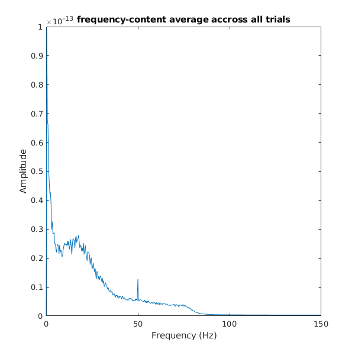
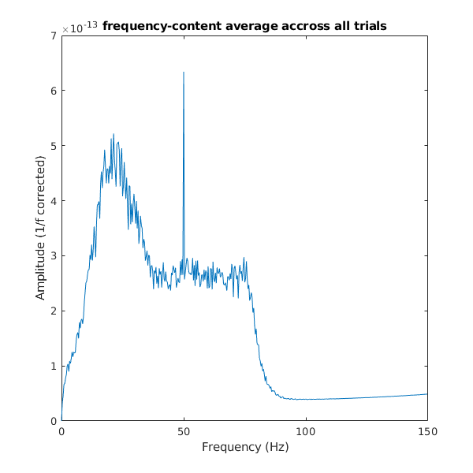
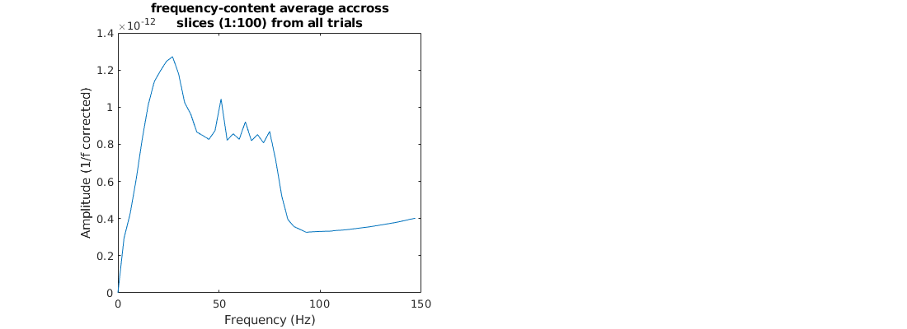
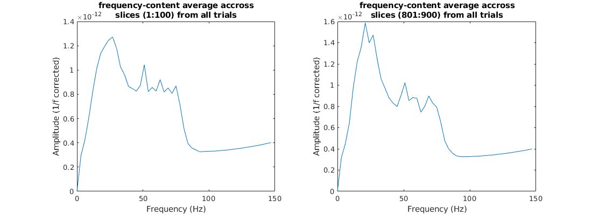
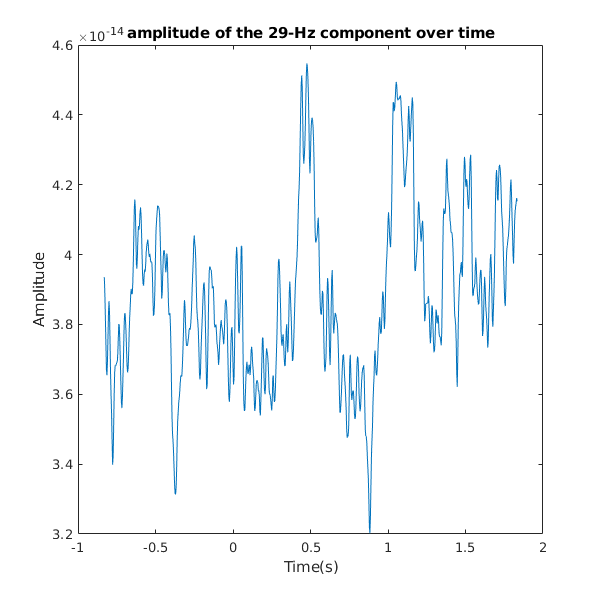
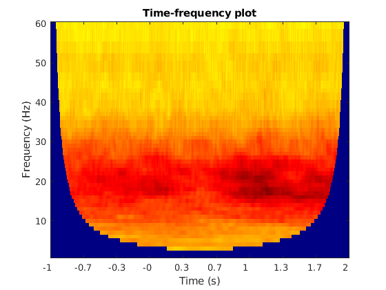
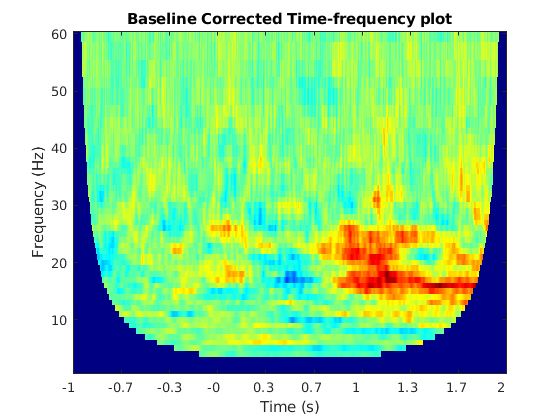

Assignment 6 - Dimitar Dimitrov - s1018291
8.3 - 1/f noise
8.3 - 1
load('tfr-data.mat');
8.3 - 2 - CODE
freq = 1/(time(2)-time(1));
8.3 - 2 - ANSWER
the sampling frequency is 300hz
8.3 - 3
dfft = fft(data,[], 2);
8.3 - 4
n=length(dfft); T = n/freq; df= 1/T; f = 0:df:(freq-df); % frequency range n=length(dfft); n_cutoff = floor(n/2); range = f(1:n_cutoff); % cut off the data at nyquist frequency
8.3 - 4 ANSWER
The associated frequency range is 300hz, nyquist frequency is then 150hz
8.3 - 5
amplitude = abs(dfft)/n; amplitude = 2 * amplitude(:,1:n_cutoff); amplitude(:,1) = amplitude(:,1)/2;
8.3 - 6
amp_mean = mean(amplitude); plot(range, amp_mean); xlabel('Frequency (Hz)'); ylabel('Amplitude'); title('frequency-content average accross all trials'); set(gcf, 'Position', [10,10,600,600]);
8.3 - 7
new_amp_mean = amp_mean.*range; plot(range, new_amp_mean); xlabel('Frequency (Hz)'); ylabel('Amplitude (1/f corrected)'); title('frequency-content average accross all trials'); set(gcf, 'Position', [10,10,600,600]);
8.3 - 7 - ANSWER
the noise at the beginning of the spectrum seems to be gone, the rest of the graph is rescaled so now the highest peak is at 50hz
8.3 - 8
the 50hz frequency occurs most frequently because of the power outlet
8.3 - 9
activity seems to occur in the bandwidth 0 to 80 but that seems to be comprised of 3 main bandwidths - 0 to 80 with moderate amplitude, 0-40 with a huge peak in the middle, and the spike at 50hz
8.4 - slice fft
8.4
load('tfr-data.mat');
freq = 1/(time(2)-time(1));
8.4 - 1
s_begin = 1; s_end = 100;
8.4 - 2
slice = data(:,s_begin:s_end);
8.4 - 3
[range, amplitude] = fourier_transform(freq, slice);
8.4 - 4
subplot(121); amp_mean = mean(amplitude); denoised = amp_mean.*range; plot(range, denoised); xlabel('Frequency (Hz)'); ylabel('Amplitude (1/f corrected)'); title([{'frequency-content average accross'}, {'slices (1:100) from all trials'}]); set(gcf, 'Position', [10,10,1100,400]);
8.4 - 5
subplot(122) s_begin = 801; s_end = 900; slice = data(:,s_begin:s_end); [range, amplitude] = fourier_transform(freq, slice); amp_mean = mean(amplitude); denoised = amp_mean.*range; plot(range, denoised); xlabel('Frequency (Hz)'); ylabel('Amplitude (1/f corrected)'); title([{'frequency-content average accross'}, {'slices (801:900) from all trials'}]); set(gcf, 'Position', [10,10,1100,400]);
8.4 - 5 ANSWER
it belongs to timeslot starting at 1.667 seconds and ending at 1.9967 seconds
8.4 - 6
the shape is generally the same, the (801-900) slice exhibits slightly higher amplitude values
8.4 - 7
[v, idx] = nearest_value(range, 29); amp_twni = amp_mean(idx);
8.4 - 7 ANSWER
the mean amplitude at frequency of 29Hz is 4.1526e-14 (note that this is for the window slice from samples 801 to 900)
8.5 get_single_amplitude
function [amplitude] = get_single_amplitude(data, fs, s_begin, s_end, foi) % function [amplitude] = get_single_amplitude(data, fs, s_begin, s_end, foi) % takes signal data matrix, frequency, beginning index of slice, end index % of slice and a frequency of interest and returns the amplitude of the % frequency if (s_begin < 1 || s_end > size(data,2)) amplitude = NaN; else slice = data(:,s_begin:s_end); [range, amplitudes] = fourier_transform(fs, slice); amp_mean = mean(amplitudes); [~, idx] = nearest_value(range, foi); amplitude = amp_mean(idx); end end
8.6 mean amplitude
8.6
load('tfr-data.mat');
window_size = 100;
foi = 29;
fs = 1/(time(2)-time(1));
8.6 - a)
amps = zeros(1,size(data,2));
8.6 - b) + c)
for t=1:size(data,2) s_begin = t-floor(window_size/2); s_end = t+ceil(window_size/2)-1; amps(t) = get_single_amplitude(data, fs, s_begin, s_end, foi); end
8.7 sliding window analysis
get_amplitude function
function [amplitudes] = get_amplitude(data, fs, window_size, foi) % function [amplitudes] = get_amplitude(data, fs, window_size, foi) % function takes data, sampling frequency, size of sample window and % frequency of interest and returns vector of the amplitudes of that % frequency for each window, having as many windows as data points per % sensor in the data amplitudes = zeros(1,size(data,2)); for t=1:size(data,2) s_begin = t-floor(window_size/2); s_end = t+ceil(window_size/2)-1; amplitudes(t) = get_single_amplitude(data, fs, s_begin, s_end, foi); end
8.7
load('tfr-data.mat');
window_size = 100;
foi = 29;
fs = 1/(time(2)-time(1));
8.7 a)
plot(time, get_amplitude(data, fs, window_size, foi)); xlabel('Time(s)'); ylabel('Amplitude'); title('amplitude of the 29-Hz component over time'); set(gcf, 'Position', [10,10,600,600]);
8.8 tfr
8.8
load('tfr-data.mat');
fs = 1/(time(2)-time(1));
tfr = [];
8.8 a)
for freq = 1:60 window_size = ( (1/freq)*fs) * 7; tfr = [tfr; get_amplitude(data, fs, window_size, freq)]; end
8.8 b)
image(128 + 128* tfr./max( max( abs(tfr) ) ) ); set(gca, 'YDIR', 'normal'); set(gca, 'XTick', linspace(1,size(data,2), 10)); tf = time(1); tl = time(end); set(gca, 'XTickLabel', round(10*(linspace(tf,tl,10)))/10); colormap jet; xlabel('Time (s)'); ylabel('Frequency (Hz)'); title('Time-frequency plot');
8.9 corrected tfr
8.9
load('tfr-data.mat'); fs = 1/(time(2)-time(1)); tfr = []; for freq = 1:60 window_size = ( (1/freq)*fs) * 7; tfr = [tfr; get_amplitude(data, fs, window_size, freq)]; end
8.9 - a)
baseline_tfr = tfr(:,time<0); baseline_mean = nanmean(baseline_tfr,2); tfr_corrected = tfr - repmat(baseline_mean, 1, size(tfr,2));
8.9 - b)
image(128 + 128* tfr_corrected./max( max( abs(tfr_corrected) ) ) ); set(gca, 'YDIR', 'normal'); set(gca, 'XTick', linspace(1,size(data,2), 10)); tf = time(1); tl = time(end); set(gca, 'XTickLabel', round(10*(linspace(tf,tl,10)))/10); colormap jet; xlabel('Time (s)'); ylabel('Frequency (Hz)'); title('Baseline Corrected Time-frequency plot');
Misc: modified Fourier Transform function, similar to the one i previously forgot to submit
function[range, amplitude] = fourier_transform(fs, signal) % function[range, amplitude] = fourier_transform(time, signal) % takes a frequency scalar and data matrix, returns the range and amplitude % of the fourier transform of that signal. % convert signal from time to frequency domain Y = fft(signal,[], 2); n = size(signal, 2); % get the amplitude amplitude = abs(Y)/n; % construct the associated frequency vector: T=n/fs; df=1/T; f=0:df:(fs-df); % take Nyquist into account n = size(Y,2); n_cutoff = floor(n/2); range = f(1:n_cutoff); amplitude = 2 * amplitude(:,1:n_cutoff); amplitude(:,1) = amplitude(:,1)/2; end